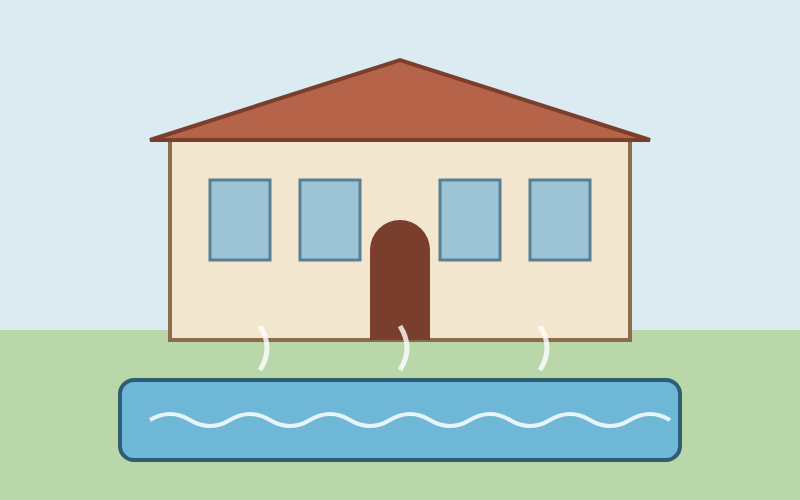

Vikend u Daruvaru
Daruvar je grad u zapadnoj Slavoniji, poznat po termalnim izvorima i Julijevom parku. Ovog vikenda grad se predstavlja sajmom domaćih proizvoda, koncertima i šetnjama s vodičem. Svi događaji održavaju se u središtu grada.
Što te čeka
-
Program vikenda
-
Znamenitosti
-
Kontakt
Tri razloga za dolazak
-
Termalna voda u Daruvarskim toplicama
-
Šetnja Julijevim parkom
-
Češka kuhinja i domaći proizvodi

Kontakt
Za pitanja piši na roko.strazicic@skole.hr
Radno vrijeme turističkog ureda
ponedjeljak – petak 8:00 – 16:00
subota 9:00 – 13:00
nedjelja zatvoreno
Natrag na vrh
Prebaci me na vrh